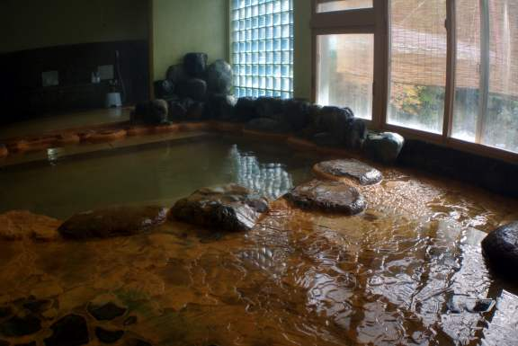
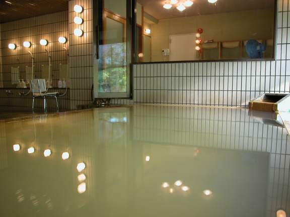
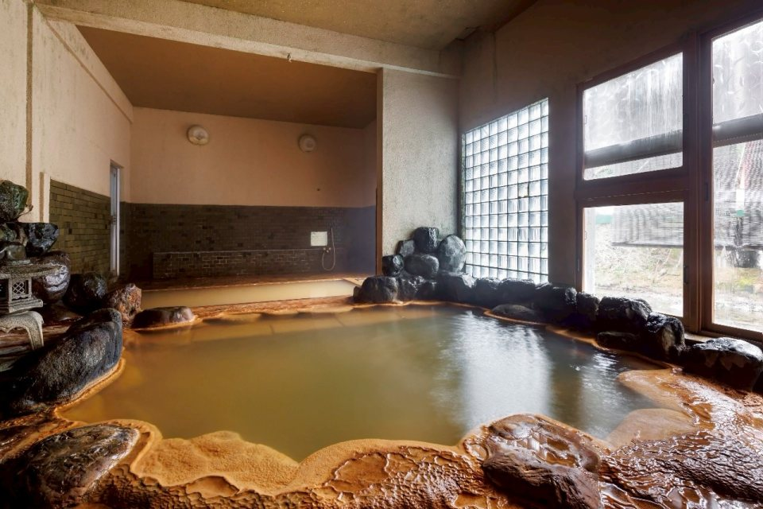
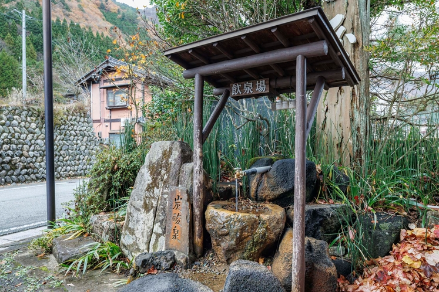
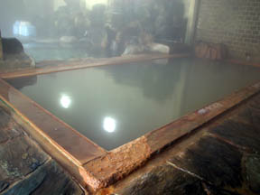

全国屈指の特選飲泉地
当館の源泉は、遊離炭酸1947mgという驚異的な数値を誇る「含二酸化炭素 ナトリウム 炭酸水素塩 塩化物泉」です。15.4℃の冷泉として湧き出すこの恵みは、古来より「胃腸の名湯」として湯治客に愛されてきました。



源泉100%の濁り湯。炭酸成分を一切薄めることなく、最適な温度に加温して提供しています。赤い湯の花が舞う、濃厚な湯をお楽しみください。

源泉そのままの「冷泉」と、川石を組んだ「加温浴槽」。この冷温交互浴こそが、奥田屋流の楽しみ方です。

| 泉質 | 含二酸化炭素・ナトリウム・炭酸水素塩・塩化物泉（15.4℃） |
|---|---|
| 成分総計 | 6451mg/kg（遊離炭酸 1947mg） |